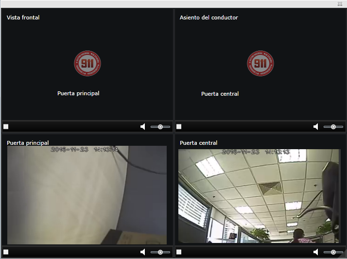
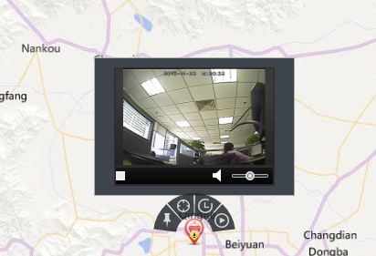

Video en tiempo real bajo demanda
Para vehículos de monitoreo en línea, pida video en tiempo real bajo demanda.
Pida múltiples canales de video en tiempo real bajo demanda: abra y vea múltiples canales de video en tiempo real de vehículos
seleccionados al mismo tiempo.
| 1. | Seleccione el vehículo de monitoreo en el árbol de organización de la interfaz principal de monitoreo diario. |
| 2. | Haga clic en el botón 〖〗 después del vehículo seleccionado para abrir la ventana “Seleccionar canal”, que muestra la distribución de la cámara de video de la vehículo seleccionada.
Fig 27 La cámara 1 es una cámara de puerta central, la cámara 2 es una cámara de posición de conducción, la cámara 3 es una cámara
de vista frontal y la cámara 4 es una cámara de puerta delantera.
|
| 3. | Seleccione la cámara que desea ver y haga clic en 〖Aceptar〗 para abrir la ventana de reproducción de video en tiempo real. |
| 4. | En la ventana soltera de la ventana de reproducción de video en tiempo real, haga clic en el botón 〖〗 para reproducir el video en tiempo real; haga clic en el botón 〖 
Fig 28 Ventana de reproducción de vídeo histórico
|
Pantalla GIS para ver video solitario y ubicación: vea video solitario y ubicación en tiempo real del vehículo seleccionado.
| 1. | Seleccione el vehículo de monitoreo en el árbol de organización de la interfaz principal de monitoreo diario, y el sistema muestra la ubicación del vehículo seleccionado en el centro del mapa GIS. |
| 2. | El mouse se desliza sobre el ícono del vehículo en el mapa GIS, y el botón de operación del vehículo se muestra automáticamente arriba el ícono. |
| 3. | Haga clic en el botón 〖〗 de la derecha para abrir la ventana “Seleccionar canal” y seleccione un canal de video. |
| 4. | Abra la ventana de un canal de video que está arriba el icono del vehículo en el área GIS y haga clic en el botón 〖〗 para reproducir el video en tiempo real; haga clic en el botón 〖 |
| 5. | La ventana de reproducción de video se mueve con la ubicación de conducción del vehículo, como se muestra en la figura a continuación.

Fig 29 Mostrar video y ubicación del vehículo
|